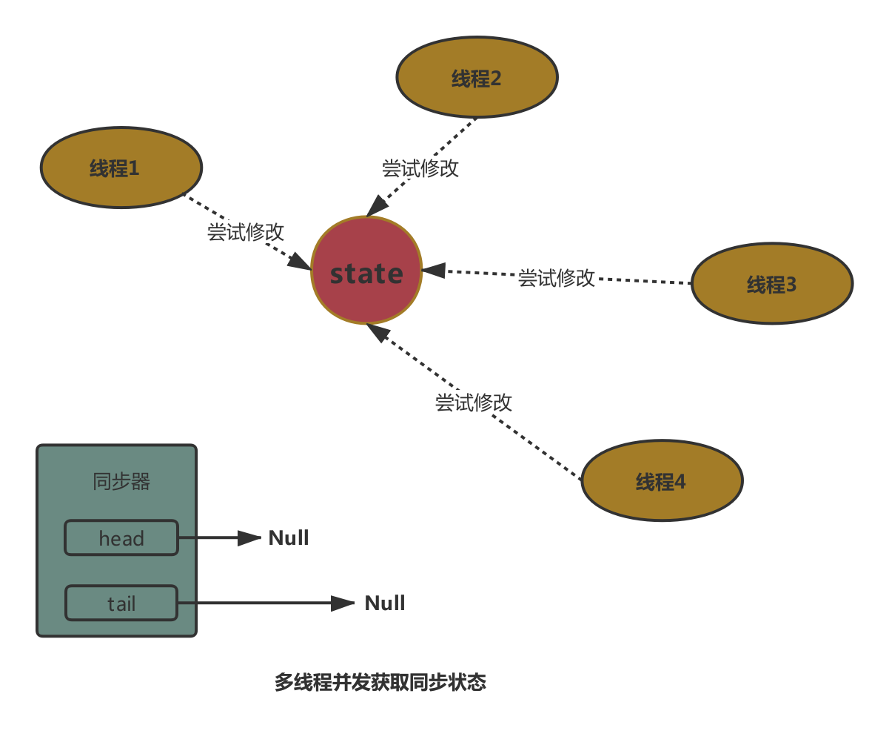

原文连接:https://www.cnblogs.com/liqiangchn/p/11960944.html
AQS是并发编程中非常重要的概念，它是juc包下的许多并发工具类，如CountdownLatch，CyclicBarrier，Semaphore 和锁, 如ReentrantLock， ReaderWriterLock的实现基础，提供了一个基于int状态码和队列来实现的并发框架。本文将对AQS框架的几个重要组成进行简要介绍，读完本文你将get到以下几个点：
- AQS进行并发控制的机制是什么
- 共享模式和独占模式获取和释放同步状态的详细过程
- 基于AQS框架实现一个简易的互斥锁
一，AQS基本概念
AQS（AbstractQueuedSynchronizer）是用来构建锁或者其他同步组件的基础框架，它使用了一个int成员变量来表示状态，通过内置的FIFO（first in，first out）队列来完成资源获取线程的排队工作。
1.1 同步状态
AQS中维持一个全局的int状态码（state），线程通过修改（加/减指定的数量）码是否成功来决定当前线程是否成功获取到同步状态。
1.1 独占or共享模式
AQS支持两种获取同步状态的模式既独占式和共享式。顾名思义，独占式模式同一时刻只允许一个线程获取同步状态，而共享模式则允许多个线程同时获取。
1.2 同步队列
同步队列（一个FIFO双向队列）是AQS的核心，用来完成同步状态的管理，当线程获取同步状态失败时，AQS会将当前线程以及等待状态等信息构造成一个节点并加入到同步队列，同时会阻塞当前线程。
二，独占模式获取与释放状态
独占模式既同一时间只能由一个线程持有同步状态。当多个线程竞争时(acquire)，获取到同步状态的线程会将当前线程赋值给Thread exclusiveOwnerThread属性（AQS父类中）来标记当前状态被线程独占。其他线程将被构造成Node加入到同步队列中。当线程l
2.1 获取同步状态
/**
* 获取同步状态
*/
public final void acquire(int arg) {
/**
* 1. tryAcquire 尝试获取同步状态;
* 2.1 addWaiter 如果尝试获取到同步状态失败，则加入到同步队列中;
* 2.2 acquireQueued 在队列中尝试获取同步状态.
*/
if (!tryAcquire(arg) &&
acquireQueued(addWaiter(Node.EXCLUSIVE), arg))
selfInterrupt();
}
多线程并发获取（修改）同步状态, 修改同步状态成功的线程标记为拥有同步状态
/** * 尝试获取同步状态【子类中实现】，因为aqs基于模板模式，仅提供基于状态和同步队列的实 * 现框架，具体的实现逻辑由子类决定 */ protected final boolean tryAcquire(int acquires) { final Thread current = Thread.currentThread(); int c = getState(); if (c == 0) { // a. 尝试修改状态值操作执行成功 if (!hasQueuedPredecessors() && compareAndSetState(0, acquires)) { // b. 修改状态值成功，记录当前持有同步状态的线程信息 setExclusiveOwnerThread(current); return true; } // 如果当前线程已经持有同步状态，继续修改同步状态【重入锁实现原理，不理解可以先忽略】 } else if (current == getExclusiveOwnerThread()) { int nextc = c + acquires; if (nextc < 0) throw new Error("Maximum lock count exceeded"); setState(nextc); return true; } return false; }获取失败的线程，加入到同步队列的队尾；加入到队列中后，如果当前节点的前驱节点为头节点再次尝试获取同步状态（下文代码：p == head && tryAcquire(arg)）。
/** * 没有获取到同步状态的线程加入到队尾部 */ private Node addWaiter(Node mode) { Node node = new Node(Thread.currentThread(), mode); // 尝试用最快的方式入队，如果入队失败，再走完整的入队方法 Node pred = tail; if (pred != null) { node.prev = pred; // 将当前线程设置到队尾 if (compareAndSetTail(pred, node)) { pred.next = node; return node; } } // 正常的入队方法 enq(node); return node; } /** * 同步队列中节点，尝试获取同步状态 */ final boolean acquireQueued(final Node node, int arg) { boolean failed = true; try { boolean interrupted = false; // 自旋(死循环) for (;;) { // 只有当前节点的前驱节点是头节点时才会尝试执行获取同步状态操作 final Node p = node.predecessor(); if (p == head && tryAcquire(arg)) { setHead(node);// 注意： 此处重点， 当前节点设置为头节点，相当于头节点出队 p.next = null; // help GC failed = false; return interrupted; } // 获取失败后是否进入wait if (shouldParkAfterFailedAcquire(p, node) && parkAndCheckInterrupt()) interrupted = true; } } finally { if (failed) cancelAcquire(node); } }- 如果头节点的下一个节点尝试获取同步状态失败后，会进入等待状态；其他节点则继续自旋。
// 伪代码
final boolean acquireQueued(final Node node, int arg) {
for (;;) {
// -------获取同步状态失败-------
// 获取失败后是否进入wait
if (shouldParkAfterFailedAcquire(p, node) &&
parkAndCheckInterrupt())
interrupted = true;
}
}
/**
* 当获取同步状态失败后是否进入park状态
*/
private static boolean shouldParkAfterFailedAcquire(Node pred, Node node) {
int ws = pred.waitStatus;
// 前驱节点为唤醒状态，返回true【后面代码暂时可以忽略】
if (ws == Node.SIGNAL)
return true;
if (ws > 0) {
do {
node.prev = pred = pred.prev;
} while (pred.waitStatus > 0);
pred.next = node;
} else {
compareAndSetWaitStatus(pred, ws, Node.SIGNAL);
}
return false;
}
独占模式获取同步状态总结
2.2 释放同步状态
当线程执行完相应逻辑后，需要释放同步状态，使后继节点有机会同步状态（让出资源，让排队的线程使用）。这时就需要调用release(int arg)方法。调用该方法后，会唤醒后继节点。
- 释放同步状态，唤醒后继节点
/**
* 释放同步状态
*/
public final boolean release(int arg) {
// 1. 尝试释放同步状态
if (tryRelease(arg)) {
Node h = head;
// 释放成功后，执行unpark，既唤醒操作（暂时可忽略waitStatus，涉及到条件队列）
if (h != null && h.waitStatus != 0)
unparkSuccessor(h);
return true;
}
return false;
}
/**
* 尝试释放同步状态，既将同步状态减去指定的值
* 如果state = 0，表示当前线程 获取次数 = 释放次数，既释放成功，此时将持有同步状态线程标志为null
*/
protected final boolean tryRelease(int releases) {
int c = getState() - releases;
if (Thread.currentThread() != getExclusiveOwnerThread())
throw new IllegalMonitorStateException();
boolean free = false;
// 状态码=0，表示释放成功了
if (c == 0) {
free = true;
// 独占标志设置为null
setExclusiveOwnerThread(null);
}
setState(c);
return free;
}
/**
* 唤醒后继节点操作
*/
private void unparkSuccessor(Node node) {
int ws = node.waitStatus;
if (ws < 0)
compareAndSetWaitStatus(node, ws, 0);
// 获取后继节点
Node s = node.next;
if (s == null || s.waitStatus > 0) {
s = null;
for (Node t = tail; t != null && t != node; t = t.prev)
if (t.waitStatus <= 0)
s = t;
}
// 唤醒后继节点
if (s != null)
LockSupport.unpark(s.thread);
}
后继节点获取同步状态成功，头节点出队。需要注意的事，出队操作是间接的，有节点获取到同步状态时，会将当前节点设置为head，而原本的head设置为null。
/**
* 同步队列中节点，尝试获取同步状态（伪代码）
* 获取成功后，当前节点设置为头节点，头节点设置为null，既头节点出队
*/
final boolean acquireQueued(final Node node, int arg) {
try {
// 自旋(死循环)
for (;;) {
if (p == head && tryAcquire(arg)) {
// a. 操作：当前节点设置为头节点，当前节点的前驱节点设置为null
setHead(node);
// b. 原始的head的next设置为null，此时原始的head已经被移出队列
p.next = null; // help GC
failed = false;
return interrupted;
}
}
}
}
/**
* a.当前节点设置为头节点，当前节点的前驱节点设置为null
*/
private void setHead(Node node) {
head = node;
node.thread = null;
node.prev = null;
}
2.3 其他竞争情况
当同步队列中头节点唤醒后继节点时，此时可能有其他线程尝试获取同步状态。

假设获取成功，将会被设置为头节点。
头节点后续节点获取同步状态失败。
三，共享模式获取与释放状态
共享模式和独占模式最主要的区别是在支持同一时刻有多个线程同时获取同步状态。为了避免带来额外的负担，在上文中提到的同步队列中都是用独占模式进行讲述，其实同步队列中的节点应该是独占和共享节点并存的。
接下来将针对共享模式状态下获取与释放状态的过程，图文并茂得进行分析。
3.1 获取同步状态
首先至少要调用一次tryAcquireShared(arg)方法，如果返回值大于等于0表示获取成功。
当获取锁失败时，则创建一个共享类型的节点并进入一个同步队列，然后进入队列中进入自旋状态（阻塞，唤醒两种状态来回切换，直到获取到同步状态为止）
当队列中的等待线程被唤醒以后就重新尝试获取锁资源，如果成功则唤醒后面还在等待的共享节点并把该唤醒事件传递下去，即会依次唤醒在该节点后面的所有共享节点，否则继续挂起等待。
当一个同享节点获取到同步状态，并唤醒后面等待的共享状态的结果如下图所示：
/**
* 共享模式获取同步状态；
* 1. 首先至少要调用一次tryAcquireShared(arg)方法，如果返回值大于等于0表示获取成功，直接返回结果即可
* 2. 否则，将会加入到同步队列中，反复阻塞与唤醒，直到获取同步状态成功为止； 获取成功后会唤醒后面还在等待的共享节点并把该唤醒事件传递下去，即会依次唤醒在该节点后面的所有共享节点
*/
public final void acquireShared(int arg) {
if (tryAcquireShared(arg) < 0)
doAcquireShared(arg);
}
/**
* 2. 自旋模式获取同步状态
*/
private void doAcquireShared(int arg) {
// 2.1 第一次获取失败后，会将此线程加入到同步队列中
final Node node = addWaiter(Node.SHARED);
boolean failed = true;
try {
boolean interrupted = false;
for (;;) {
// 如果前驱节点是头节点，尝试获取同步状态
final Node p = node.predecessor();
if (p == head) {
// r > 0表示获取同步状态成功，并且还有共享类型节点在同步队列中
// r == 0 表示获取同步状态成功，同步队列中没有其他共享模式节点
int r = tryAcquireShared(arg);
if (r >= 0) {
// ！！！！ 获取同步状态成功后，将当前node设置为头节点，并向后传播，唤醒共享模式等待的节点
setHeadAndPropagate(node, r);
p.next = null; // help GC
if (interrupted)
selfInterrupt();
failed = false;
return;
}
}
if (shouldParkAfterFailedAcquire(p, node) &&
parkAndCheckInterrupt())
interrupted = true;
}
} finally {
if (failed)
cancelAcquire(node);
}
}
/**
* 设置新的头结点，并设置后面需要唤醒的节点
*/
private void setHeadAndPropagate(Node node, int propagate) {
Node h = head; // Record old head for check below
setHead(node);
// propagate > 0 表明后面需要唤醒的共享模式节点
if (propagate > 0 || h == null || h.waitStatus < 0 ||
(h = head) == null || h.waitStatus < 0) {
Node s = node.next;
// 如果当前节点的后继节点是共享类型或者没有后继节点，则进行唤醒
// 这里可以理解为除非明确指明不需要唤醒（后继等待节点是独占类型），否则都要唤醒
if (s == null || s.isShared())
doReleaseShared();
}
}
/**
* 唤醒所有共享模式节点
*/
private void doReleaseShared() {
for (;;) {
// 唤醒操作由头结点开始，注意这里的头节点已经是上面新设置的头结点了
// 其实就是唤醒上面新获取到共享锁的节点的后继节点
Node h = head;
if (h != null && h != tail) {
int ws = h.waitStatus;
// 表示后继节点需要被唤醒
if (ws == Node.SIGNAL) {
//这里需要控制并发，因为入口有setHeadAndPropagate跟release两个，避免两次unpark
if (!compareAndSetWaitStatus(h, Node.SIGNAL, 0))
continue;
//执行唤醒操作
unparkSuccessor(h);
}
//如果后继节点暂时不需要唤醒，则把当前节点状态设置为PROPAGATE确保以后可以传递下去
else if (ws == 0 &&
!compareAndSetWaitStatus(h, 0, Node.PROPAGATE))
continue;
}
// 如果头结点没有发生变化，表示设置完成，退出循环
// 如果头结点发生变化，比如说其他线程获取到了锁，为了使自己的唤醒动作可以传递，必须进行重试
if (h == head)
break;
}
}
最后，获取到同步状态的线程执行完毕，同步队列中只有一个独占节点：
3.2 释放同步状态
释放同步状态后，同步队列的变化过程和共享节点获取到同步状态后的变化过程一致，此处不再进行赘述。
/**
* 释放同步状态，如果释放成功，唤醒后面等待的节点
*
*/
public final boolean releaseShared(int arg) {
// 1. 尝试释放同步状态
if (tryReleaseShared(arg)) {
// 2. 释放成功后，唤醒后续等待共享节点
doReleaseShared();
return true;
}
return false;
}
四，基于AQS实现互斥锁
读到此处，大部分人应该还比较懵逼，似懂非懂。接下来笔者将通过AQS实现一个互斥锁带你打开AQS的正确打开姿势。
多线程环境count += 1可能会存在问题，详情可以看在并发编程bug的来源中介绍的三大原因。正如大多数人都知道的，我们通常可以使用synchronized关键字进行同步，接下来我们就基于AQS自定义一个互斥锁来完成相同的功能。
4.1 代码实现
/**
* 自定义互斥锁
*
* @author cruder
* @time 2019/11/29 23:23
*/
public class MutexLock {
private static final Sync STATE_HOLDER = new Sync();
/**
* 通过Sync内部类来持有同步状态， 当状态为1表示锁被持有，0表示锁处于空闲状态
*/
private static class Sync extends AbstractQueuedSynchronizer {
/**
* 是否被独占， 有两种表示方式
* 1. 可以根据状态，state=1表示锁被占用，0表示空闲
* 2. 可以根据当前独占锁的线程来判断，即getExclusiveOwnerThread()!=null 表示被独占
*/
@Override
protected boolean isHeldExclusively() {
return getExclusiveOwnerThread() != null;
}
/**
* 尝试获取锁，将状态从0修改为1，操作成功则将当前线程设置为当前独占锁的线程
*/
@Override
protected boolean tryAcquire(int arg) {
if (compareAndSetState(0, 1)) {
setExclusiveOwnerThread(Thread.currentThread());
return true;
}
return false;
}
/**
* 释放锁，将状态修改为0
*/
@Override
protected boolean tryRelease(int arg) {
if (getState() == 0) {
throw new UnsupportedOperationException();
}
setExclusiveOwnerThread(null);
setState(0);
return true;
}
}
/**
* 下面的实现Lock接口需要重写的方法，基本是就是调用内部内Sync的方法
*/
public void lock() {
STATE_HOLDER.acquire(1);
}
public void unlock() {
STATE_HOLDER.release(1);
}
}
4.2 锁的测试
我们定义一个计数器类，里面定义了2个不同的计数方法，其中一个使用互斥锁进行同步。开启10个线程并发执行，每个线程计数10000次，然后对比统计结果与预期的100，000是否相符。
package myLock;
import java.util.concurrent.*;
/**
* 自定义锁测试
*
* @author liqiang
* @time 2019/11/29 12:39
*/
public class MyLockTest {
public static void main(String[] args) throws InterruptedException {
int threadNum = 10;
int countPerThread = 10000;
// 线程池创建的正确姿势
ThreadPoolExecutor threadPool = new ThreadPoolExecutor(threadNum, threadNum, 1000, TimeUnit.SECONDS, new ArrayBlockingQueue<>(10), new ThreadPoolExecutor.AbortPolicy());
CountDownLatch countDownLatch = new CountDownLatch(threadNum);
Counter counter = new Counter();
Counter counterUnsafe = new Counter();
for (int i = 0; i < threadNum; i++) {
threadPool.submit(() -> {
for (int j = 0; j < countPerThread; j++) {
counter.getAndIncrement();
counterUnsafe.getAndIncrementUnSfae();
}
countDownLatch.countDown();
});
}
countDownLatch.await();
System.out.printf("%s 个线程，每个线程累加了 %s 次，执行结果：safeCounter = %s, unsafeCounter = %s ", threadNum, countPerThread, counter.get(), counterUnsafe.get());
threadPool.shutdownNow();
}
}
class Counter {
private MutexLock mutexLock;
private volatile int count;
Counter() {
this.mutexLock = new MutexLock();
}
int get() {
return count;
}
int getAndIncrement() {
mutexLock.lock();
count++;
mutexLock.unlock();
return count;
}
int getAndIncrementUnSfae() {
count++;
return count;
}
}
结果和预期一样，用自定义锁实现的计数器统计没有误差。
五，总结
- AQS通过一个int同步状态码，和一个（先进先出）队列来控制多个线程访问资源
- 支持独占和共享两种模式获取同步状态码
- 当线程获取同步状态失败会被加入到同步队列中
- 当线程释放同步状态，会唤醒后继节点来获取同步状态
- 共享模式下的节点获取到同步状态或者释放同步状态时，不仅会唤醒后继节点，还会向后传播，唤醒所有同步节点
- 使用volatile关键字保证状态码在线程间的可见性，CAS操作保证修改状态码过程的原子性。
AQS的设计与实现比本文中描述的要稍微复杂一些，为了达到快速入门的效果所以本文进行了简化。对于没有讲到的内容，比如，对于独占模式下超时获取同步状态， 队列中节点状态的流转， 条件队列等没有讲到的内容，将会放到下一篇文章中进行介绍。
六，Q&A
Question1： 在java中通常使用synchronized来实现方法同步，AQS中通过CAS保证了修改同步状态的一致性问题，那么对比synchronized，cas有什么优势不同与优势呢？你还知道其他无锁并发的策略吗？
我的相关文章：
参考：
https://www.jianshu.com/p/1161d33fc1d0
《Java并发编程的艺术》
《Java并发编程实战》